丁亥日
中伏第八天
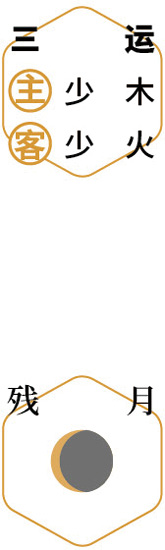
 贴秋膘
贴秋膘初秋｜节气｜ 立秋 ｜时间｜ 八月七日至八月廿三日
今年立秋需特别注意的健康问题：发热、腹泻、呕吐、流鼻血、身体酸痛、皮肤病
原料：新鲜荷叶、陈皮、粥米。
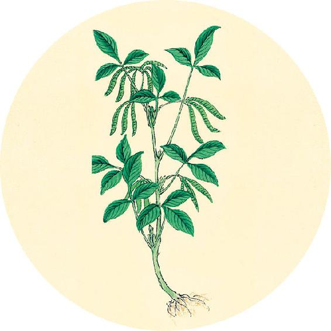
节气食方（一）
荷叶粥（辛丑岁配方）
原料：新鲜荷叶1张、陈皮1个、粥米适量。
做法：把陈皮和米一起加水熬粥，快熟时将整张荷叶覆盖在粥面上，不盖锅盖，煮2分钟后关火，闷一会儿起锅。
功效：祛湿、健胃、缓解疲劳、调理痰湿体质，也是胃酸过多型胃病者平时的养胃餐。
体虚、瘦弱的人贴秋膘，可以吃十全大补酒糟鸡（食方在8月17日）。
【释义】体内蛲虫多，会梦见众人聚集；体内蛔虫多，会梦见与人相斗受伤。

贴秋膘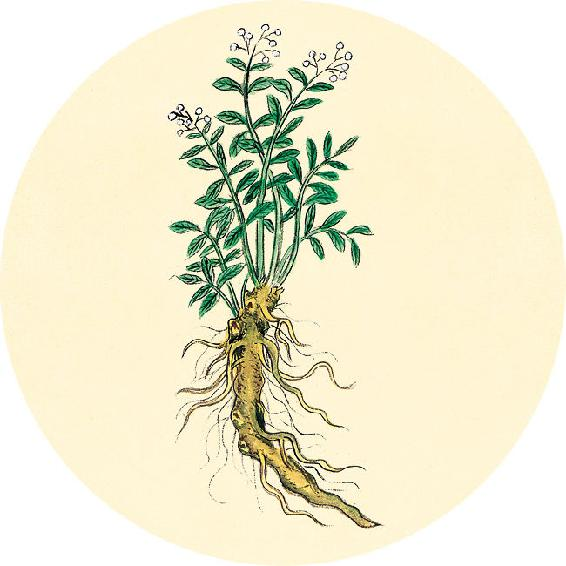
二十四节气茶养生
今年立秋节气品茶推荐：荷叶茶。
今年人体容易脾虚湿气重，宜多喝荷叶茶。
祛湿降脂茶
原料：炒荷叶6克、陈皮1/2个、气虚者加黄芪30克。
做法：煮水或冲泡饮用。
功效：补气祛湿、降脂瘦身。
是故持脉有道，虚静为保。
——黄帝内经·素问·脉要精微论
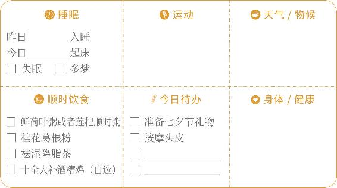
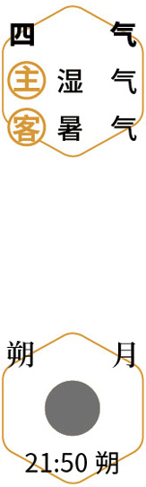
观莲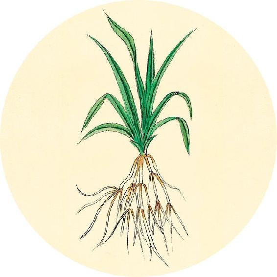
健康提示
前几年的三伏大多是40天。今年的三伏是正常的三个伏，共30天。
明天进入三伏的最后一伏，是贴末伏贴的日子。还有10天的机会进行冬病夏治，之前没有贴三伏贴的人，现在仍然可以补贴。如果没有贴够数量，可以在出伏后的10天内（8月20日至29日）再贴三次伏后加强贴。
【释义】所以切脉有一定的规则，重要的是让心清虚宁静（这样切脉才准确）。
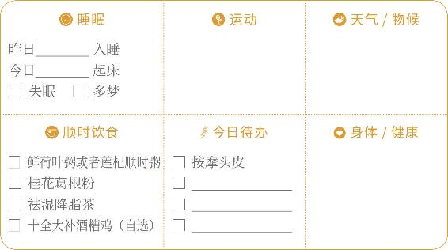
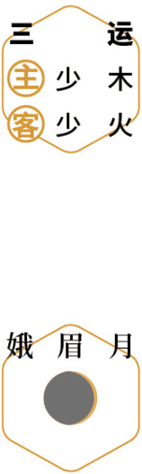
补气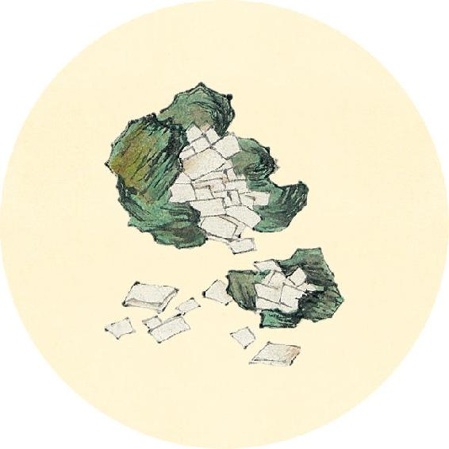
健康提示
立秋节气的养生功课：补脾气、祛脾湿。
今年立秋特殊的养生重点——
今年立秋节气，如果觉得闷热难耐，不要贪凉，注意清除身体内部的湿热。
保养重点：肺、胆。
容易出现的问题：发热、腹泻、呕吐、流鼻血、身体酸痛、皮肤病。
春日浮，如鱼之游在波。
——黄帝内经·素问·脉要精微论
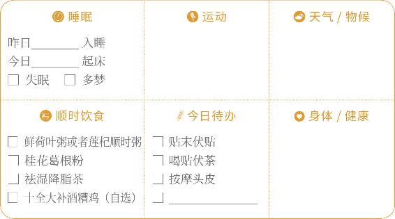
天灸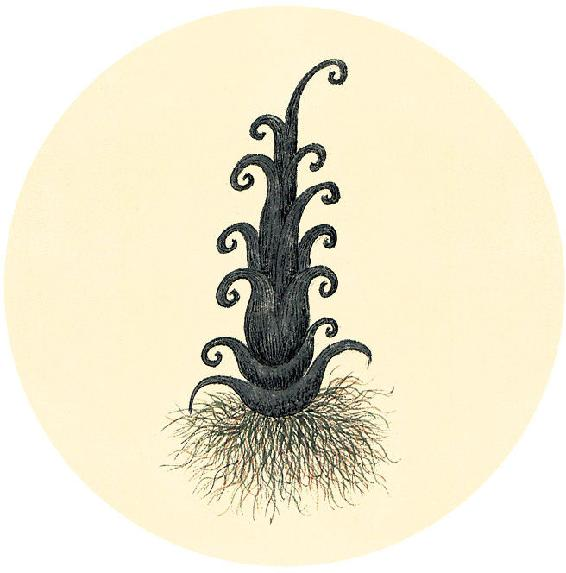
一候反思
根据5月4日立夏前测量记录的结果对比：
立夏前体重________公斤，现在体重________公斤
立夏前腰围________厘米，现在腰围________厘米
比较结果（符合则打钩）及饮食对策：
□ 体重及腰围均增加
对策：对照8月16日自测喝适合自身体质的荷叶瘦身茶。
□ 体重及腰围均减少
对策：吃十全大补酒糟鸡，翻到8月27日，在第1个选项打钩。
□ 体重变化不大，但腰围变大
对策：继续喝两个月黄芪，翻到12月1日在第1个选项打钩。
【释义】春季脉上浮，像鱼儿游在水波之中。（春气升发，使人体的脉开始上浮，但还没完全出来，所以像鱼浮游水中，若隐若现。诊脉时轻取。——允斌注）
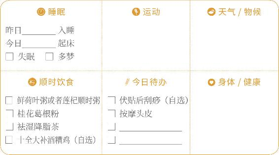
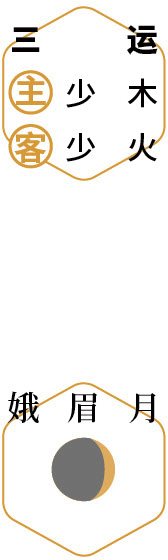
刮痧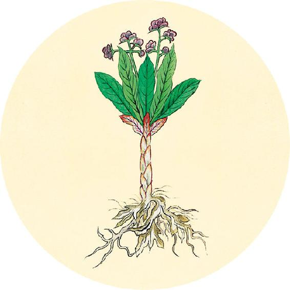
健康提示
从立秋开始进入秋天的第一个月。
养生关键词：补气祛湿。
上半月重点：祛除脾胃湿气。
下半月重点：祛除下焦湿气。
今年初秋这一个月，雨水多，湿热交蒸，平时易发各种皮肤病、长痘、过敏、痛风的人要特别注意保养。
夏日在肤，泛泛乎万物有余。
——黄帝内经·素问·脉要精微论
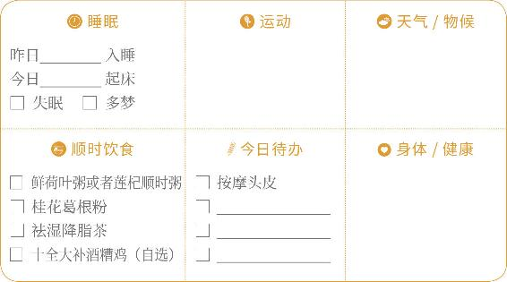
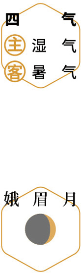
祛湿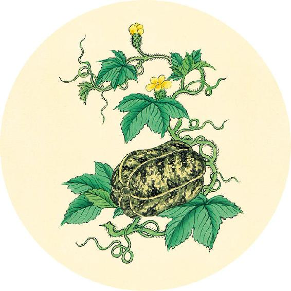
健康提示
为什么立秋要贴秋膘？
立秋贴秋膘，“贴”的不是肥肉，而是人体的精气。其实，就是给人体补气补能量。
贴秋膘，北方人一般吃饺子，而南方人讲究煲肉汤。不管吃什么，就是要增加饮食中蛋白质和油脂的摄入量。不能像夏天那样多吃凉菜，而是要吃些炒菜和炖菜了。
【释义】夏季脉充于皮肤，盈满指下，如同夏天万物的生长茂盛。（诊脉时用中等指力取脉。——允斌注）
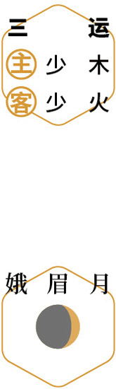
天灸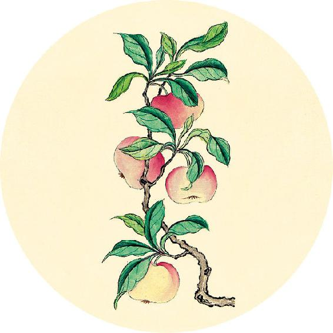
节日食方
女性养颜古方：莲花驻颜粉
原方：采摘农历七月初七的莲花、八月初八的莲藕、九月初九的莲子，晒干磨成粉。
这个方子可以让皮肤的血色更好。
古人对采摘的时间要求精准，这里面有古代的一些讲究。七月的莲花比较鲜香，八月的莲藕比较肥美，而九月的莲子比较难得。
现代简易自制法见8月15日。
秋日下肤，蜇虫将去。
——黄帝内经·素问·脉要精微论
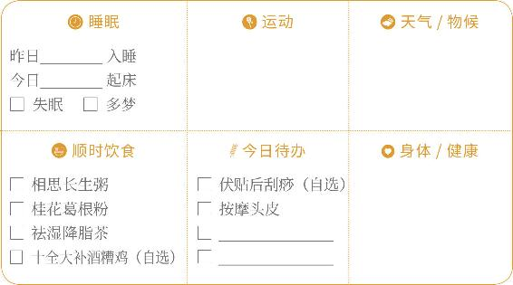
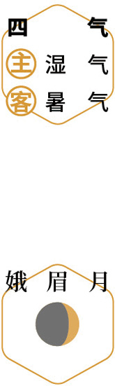
观星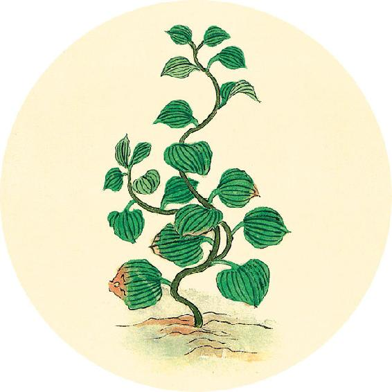
健康提示
如果想复制古方，莲藕自己制粉比较难，可以买现成的藕粉。
自制莲花驻颜粉的简单方法
原料：莲花干品（鲜花晒干或去药房买干品）70克、藕粉80克、莲子90克。
做法：分别打粉后混合均匀。
吃法：每次取一勺，用一小盅酒调化，温热后食用。
【释义】秋季脉从皮肤逐渐往下沉，就像蜇虫将要潜入地下洞穴准备过冬。（诊脉时轻轻下按。——允斌注）
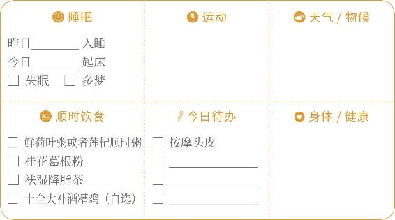
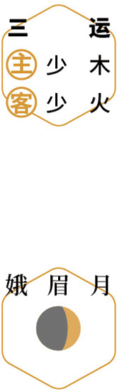
赏荷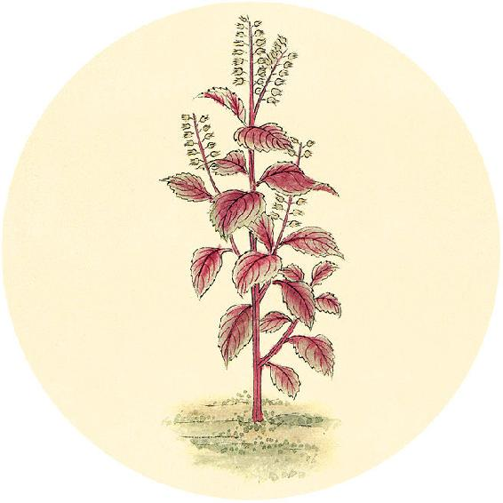
健康提示
荷叶祛湿、瘦身，保健作用明显而且平和，全家人都可以用。
二候反思
湿气重或是肥胖的人，可以常喝荷叶瘦身茶。扫描二维码，进入体质测试小程序，测试需要喝哪一种。
□ 惊鸿茶：消脂瘦身
□ 楚腰茶：消肿瘦身
□ 飞燕茶：祛湿瘦身
□ 绿袖茶：清火瘦身
注意：瘦人不要多喝荷叶茶，以免越喝越瘦。
冬日在骨，蜇虫周密，君子居室。
——黄帝内经·素问·脉要精微论
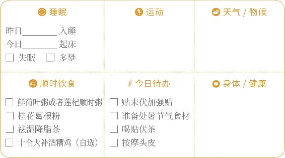
 天灸
天灸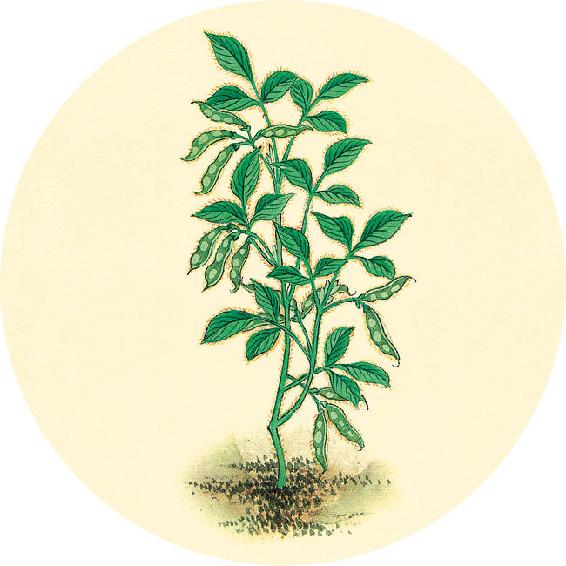
节气食方（二）
十全大补酒糟鸡
原料：柴鸡、醪糟、油、盐。
做法：
1. 将整只柴鸡切块，加少许盐腌30分钟入味。
2. 放油锅炸熟捞出。
3. 另用一锅放入醪糟，不要加水，把鸡块放进去，煮开后起锅。
功效：健脾养胃，温肺益肾，滋肝益肾；调理脾胃虚弱、气血不足、虚劳泄泻、腰疼、病后体虚、产后体虚。
【释义】冬季脉沉在骨，就像冬天蜇虫密藏洞穴内，人们深居室内一样。（诊脉时重按至骨。——允斌注）
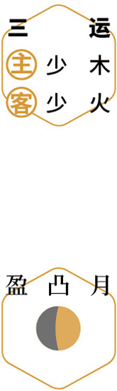
刮痧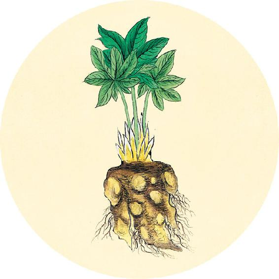
读书
“桑叶之功，最善补骨中之髓、添肾中之精、止身中之汗，填脑明目，活血生津，种子安胎，调和血脉，通利关节，除风湿寒痹，消水肿脚浮。老男人可以扶衰却老，老妇人可以还少生儿。
老人男女之不能生子者，制桑叶为方，使老男年过八八之数、老女年过七七之数者，服之尚可得子，始知桑叶之妙，为诸补真阴者之所不及。”
——清·陈士铎《本草新编》
知内者按而纪之，知外者终而始之。
——黄帝内经·素问·脉要精微论
 进补
进补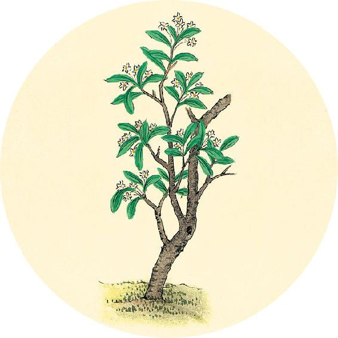
健康提示
今天三伏结束，“伏尽热尽”，暑热逐渐退去，早晚注意加衣。秋冬经常咳嗽的人，从现在起要停止西瓜、冷饮等寒湿的食物。
三伏期间人体气血消耗较多，也蓄积了不少湿气，容易气虚、脾虚。有的人会出现便秘腹泻交替、肠胃型感冒、皮肤过敏等毛病，可以喝黄芪补气，喝荷叶茶祛湿。
祛湿食材：荷叶、白扁豆、赤小豆、茯苓。
【释义】体内内脏的病变，可通过按脉找出端倪；体表经气的病变，可从经脉终而复始的循行路径来推究。
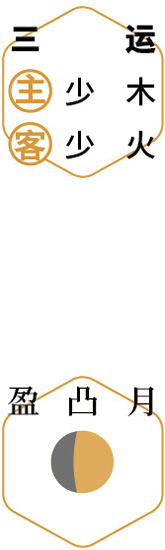
祛湿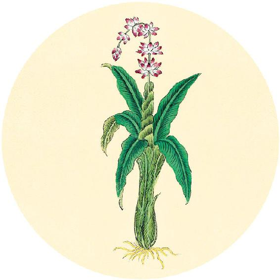
健康提示
自制重力眼枕
准备两个一样大小的真丝眼罩（要大号的），将边缘对齐缝合，留一个小口，装入150～200克的天然珍珠和小粒琥珀，让它有一定重量，将开口缝合。午睡或长途旅行小憩时戴着睡觉。
功效：
1. 利用重力对眼部、眼袋、黑眼圈处、眉心轻柔施压，促进血气和水分代谢。
2. 珍珠、琥珀宁心安神，在袋内摩擦会产生微细粉末，对皮肤也好。
3. 彻底隔绝光线，午睡、旅途或学生宿舍，不会受环境光干扰。
五藏者，皆禀气于胃，胃者五藏之本也。
——黄帝内经·素问·脉要精微论
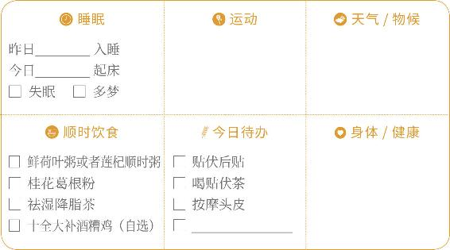
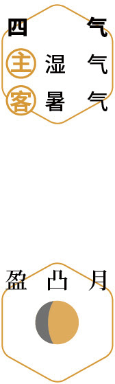
天灸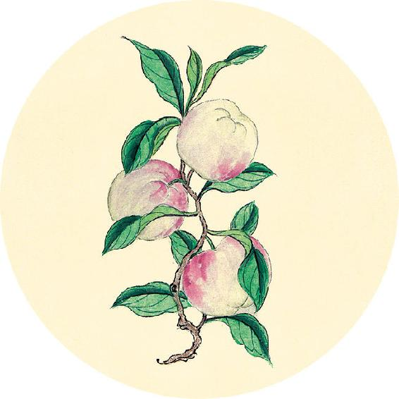
食材准备
后天进入处暑节气。
1. 出伏送暑汤
原料：豆腐、豇豆角、空心菜、胡椒粉、油、盐。
2. 辛丑岁四气保健方：桂花葛根粉（从大暑喝到秋分前日，做法见7月29日）
原料：葛根粉、桂花（干品）、枸杞、蜂蜜（糖尿病病人可以用罗汉果甜味料代替）各适量。
3. 清痘排毒茶
原料：马齿苋、蒲公英。
4.辛丑岁全年保健方：莲杞顺时粥
原料：炒荷叶、川陈皮、莲子、枸杞子、茯苓、粥料。
【释义】五脏之气，都依赖胃的水谷精微来营养，所以胃是五脏的根本。
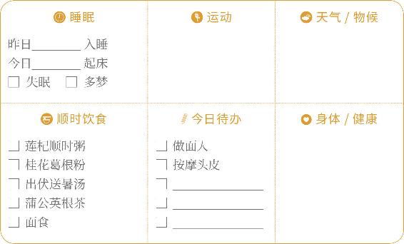
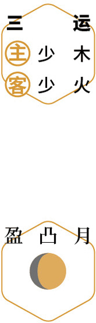
食面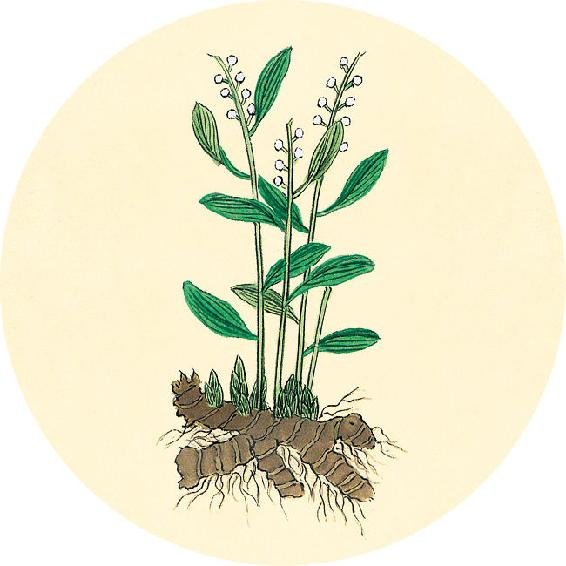
节气总结备
喝祛湿降脂茶的次数________
喝五味茱萸梅子汤的次数________
喝莲杞顺时粥的次数________
喝荷叶粥/荷叶茶的次数________
贴三伏贴的次数________
身体哪些方面有改善_________________________
故邪气胜者，精气衰也。
——黄帝内经·素问·玉机真藏论
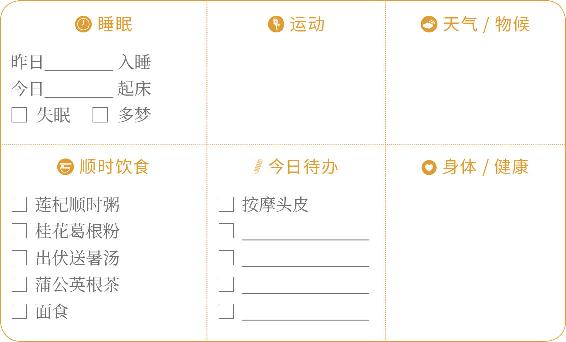
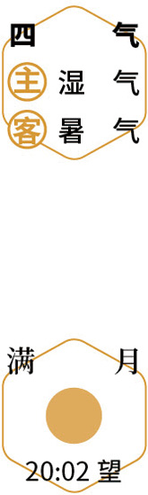
祭祖